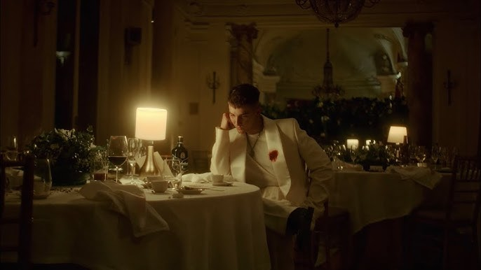

Casanova de Recycled J: Un álbum sobre las etapas del duelo amoroso

El pasado viernes 20 de octubre el cantante madrileño, Recycled J, lanzó la versión Deluxe de su álbum Casanova, junto con algunos productores como Selecta, Pablo Rouss y Kiddo. El álbum cuenta con cuatro nuevas colaboraciones y un rediseño de la portada. Sin embargo, su proyecto inicial lleva resonando desde junio, con algunos singles virales como 150 canciones y su gira por España y LATAM no ha hecho más que empezar. La estética de su nueva era musical ha causado una gran acogida por parte de los fans. Las rosas, las cadenas y la crisis amorosa constituyen el punto de partida sonoro y poético y cada canción es parte de una compleja historia de amor y superación que puede resultarnos muy familiar.
A partir de una detallada escucha de Casanova Deluxe, se nota que el lenguaje empleado por Jorge adopta un tono amoroso centrado en la pasión, el egoísmo, el remordimiento, las ganas… incluso sus melodías y el ritmo pueden asociarse a sentimientos. Cada una cuenta su propia historia, como suele pasar en la mayoría de los álbumes musicales. Sin embargo, entre todas estas piezas existe un hilo conductor, lo que lleva al oyente a preguntarse: ¿y si el álbum en realidad trata sobre una sola chica? ¿Es un álbum conceptual sobre las fases del duelo tras una ruptura? La respuesta se encuentra en analizar profundamente cada canción junto con las cuatro nuevas colaboraciones.
- 150 canciones, Ganas y BABY BOO; La idealización y el amor sano
- Cara a cara: El conflicto y el desgaste
- Casanova: La ruptura y la culpa
- Perro hambriento: De la culpa a la ira
- Perla negra con Leo Rizzi, el interludio y No hay manera; la negación
- Rosas freestyle; el autoengaño
- 10.000 km, Primadonna y Los muertos y las flores; las recaídas
- Dime algo; la aceptación
- Pa no volver; La superación
La primera etapa en una relación de pareja es el enamoramiento, ambos piensan que son almas gemelas y viven una relación perfecta. Las palabras bonitas, el deseo y el cariño son cruciales. Esto queda retratado en 150 canciones “Imaginar que ya no estás cuando amanece, eso escuece más que un mal de amor” Incluso Ganas, que además de representar la pasión sexual, el amor ya ha tenido su golpe de realidad, es más maduro. Él sabe que ella le quiere y viceversa. El deseo sexual, que posteriormente podrá encajarse en cualquiera de las fases del álbum, se refleja sobre todo en la nueva colaboración con Enry – K, BABY BOO, más divertida y pegadiza.
Él está cansado de que los problemas no se resuelvan, suplica que pueda decir a la cara lo que siente, sin rodeos. Ambos son conscientes de que la relación no avanza “de tanto jugar pinchaste la pelota” Esto se hace notar en que el sonido es más triste y apagado.
Con un tono angustioso y triste, Casanova marca la primera fase del duelo; la culpa, y es el eje central del disco. El cantante cree tener el control de la situación, que sabe conquistar, pero esta vez admite que ha fracasado “hice tantas heridas, para curar las mías, maldita ambición, la culpa fue mía ya nadie confía en alguien como yo”. Ahora teme que nadie le quiera, es “una putada ser un casanova”. Al mismo tiempo, ya lejos del amor, la letra representa una metáfora de la lucha real con la que convive Recycled J; manejar su carrera a la perfección y lidiar con los altibajos que puedan surgir en el proceso. Por esta razón, la canción es una de las más importantes del disco y la que le dará el nombre.
Tras sentirse culpable, el cantante libera su rabia. La letra es más agresiva y su voz se vuelca cada vez más en el rap, un género que, además de nacer del inconformismo y la crítica, destaca por usar la improvisación; de ahí que el artista quiera desahogarse “como el yonki al colorao' sin saber que ha estao' corta'o”
El tono de injusticia de “Perro hambriento” se vuelve más ameno, por la base de reggaetón, parece que el artista quiere convencerse a sí mismo de que se siente mucho mejor que antes, aunque eso no quita que siga sintiéndose culpable. Por otro lado, No hay manera es la canción más triste, pero menos compleja a nivel de producción musical. También es la fase más dura del duelo, la depresión y la negatividad; El artista ha perdido todo, se siente vacío y se hunde en su incredulidad. “Pero tú ya no estás y ha crecido el bambino”
El protagonista recuerda sus inicios con un freestyle. Menciona su barrio, su trayectoria musical, la fama… Con estos versos pretende evadirse de la realidad. Se convence a sí mismo de que ya ha superado la relación, y de qué mejor manera que entrando en su zona de confort. Durante todo el disco, las rosas juegan un papel fundamental por su simbolismo; los pétalos representan la parte bonita y superficial que tapa el dolor, y las espinas la realidad de una relación tóxica “pétalos me acarician, y tus espinas pinchan”
Con esta combinación de géneros llegamos a la conclusión de que no todas las recaídas son iguales. “10.000 km” tiene una melodía que transporta a la nostalgia, el cantante echa de menos a la chica, soluciona sus problemas con el alcohol y pasa las noches en vela “Río y lloro, fumo y bebo sin más”. Siente que ella está muy lejos de su alcance. En cambio, Primadonna, probablemente la canción que más se acerca a la electrónica/electro pop junto con Cruel, hace un resumen muy rápido de todos sus recuerdos; los lujos, las peleas y la admiración de la belleza. “Los muertos y las flores” es la última recaída, ahora con un estilo de rap-pop, pretende desenterrar la relación en la que ni se tienen ni se dejan, son felices, pero no se necesitan.
A pesar de la incertidumbre que transmite la canción, el artista comprende que la relación no es buena para él “pesa tanto el peso que yo cargo”. Desea quitarse ese peso de encima que tanto le hace dudar y centrarse en sí mismo.
La melodía más alegre indica el final de la historia. Desde ahora el “contacto 0” es esencial, el artista se hace preguntas sobre porqué la relación acabó y, a pesar de que siga pensando en ella, su perspectiva ha cambiado. Desde ese momento, la superación ya no se hace cuesta arriba y hasta existe la posibilidad de que conozca a un nuevo amor…
A partir del final, volvemos al comienzo, a 150 canciones. Casanova es un ciclo, tras la superación, el casanova volverá a enamorarse y a fracasar.
Las dos canciones restantes del álbum; Cruel con Villano Antillano, y Solo un beso con LËITI adoptan un tono más sensual y atractivo, más alejado de la pena amorosa, que como en BABY BOO, podrían encajarse en cualquiera de las fases del proceso de superación; la falta de amor sexual, las ganas y la posibilidad de conocer a otras chicas de manera no sentimental.
Recycled J dará su próximo concierto en Madrid el 15 de Enero de 2024 en el Palacio Vistalegre.